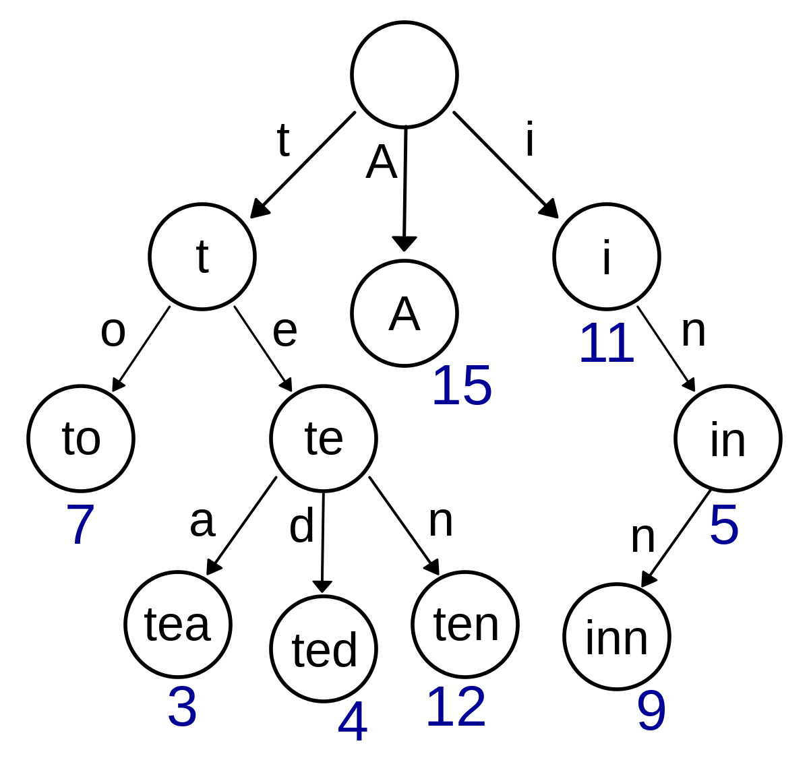

Trie (Prefix tree)
A trie also called prefix tree, is a type of search tree used for locating specific keys from within a set. These keys are most often strings, and each node represent a single character in the string. The Operation of a single string (insert, update, delete) takes O(n) where n is the length of the string. Each Trie Node contains a map that map a character to a Trie Node, and a Boolean value to indicate if the current string is an existing word in the Trie or not.
type Trie struct {
Root *TrieNode
}
func NewTrie() *Trie {
return &Trie{Root: &TrieNode{m: map[rune]*TrieNode{}, isWord:false }}
}
type TrieNode struct {
m map[rune]*TrieNode
isWord bool
}Insert | O(n)
func (t *Trie) Insert(word string) {
curr := t.Root
for _, r := range word {
if n, ok := curr.m[r]; ok {
curr = n
} else {
curr.m[r] = &TrieNode{m: map[rune]*TrieNode{}, isWord:false}
curr = curr.m[r]
}
}
curr.isWord = true
}Word Exist | O(n)
func (t *Trie) WordExist(word string) bool {
curr := t.Root
for _, r := range word {
if _, ok := curr.m[r]; !ok {
return false
}
curr = curr.m[r]
}
return curr.isWord
}Remove Word | O(n)
To remove a word from Trie, we need to remove the nodes representing each characters of the word only those node only represent the target word's character.
func (t *Trie) RemoveWord(node *TrieNode, word string, index int) bool {
// note that index == len(word) not len(word) - 1
// because we want to remove starting from the node that
// the last character point to
if index == len(word) {
if !node.isWord {
return false
}
node.isWord = false
return len(node.m) == 0
}
if n, ok := node.m[rune(word[index])]; !ok {
return false
} else {
if t.RemoveWord(n, word, index + 1) {
delete(node.m, rune(word[index]))
}
if node.isWord {
return false
}
}
return len(node.m) == 0
}With Prefix | O(n)
Return an array of strings with the same prefix.
func (t *Trie) WithPrefix(prefix string) []string {
curr := t.Root
for _, r := range prefix {
if _, ok := curr.m[r]; !ok {
return []string{}
}
curr = curr.m[r]
}
ans := []string{}
withPrefixDFS(curr, prefix, &ans)
return ans
}
func withPrefixDFS (node *TrieNode, prefix string, ans *[]string) {
if node.isWord {
*ans = append(*ans, prefix)
}
for k, n := range node.m {
withPrefixDFS(n, prefix + string(k), ans)
}
}